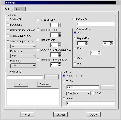

``What Linux really needs ...'' is the beginning of an oft written statement which nearly as often ends with ``graphical front-ends for legacy console apps.'' To quote a certain magazine editor: ``Of course, what Linux needs are not just dialogs, but dialogs that optionally show you the command-line options they generate, so you can get used to which options do what.'' I add that it would also be nice if the dialogs were easy to write, so more people would bother to create them.
Kaptain has the ability to display mixed widget types in a modern looking dialog which is created from a text file. The program can take care of most of the layout and widget types for you. You can even write tabbed and child dialogs. And, importantly, it can echo it's output to the command line for learning purposes (or the sheer delight of experimenting :-) ). It also has tooltips and WhatsThis to aid in this regard. You could even use it as part of a pipe and have it written on the fly!
Linux is chock-full of powerful command line goodies like enscript and mpage, but, even if you were a member of their frequent-flyer program, you'd never be able to remember all the switches and options included with them. Kaptain is perfect for this sort of thing: lots of spinners, check-boxes and combos etc. Then there are those file conversion chores. I have constructed many, er, interesting looking pipelines to convert image, sound and text formats. The latter do surrender to a little bash function - as long as you don't need to change any options for any of the commands. By the time you write enough shell script to handle all the options... you need to write a man page for your shell script.
I wouldn't be writing this if Kaptain couldn't do all of that, but I'd be lying if I said that it looked easy to me right away. I'd like to re-stress the "me" in the preceding sentence: I'd never written in anything object oriented before. If you've done any at all, I'm sure Kaptain will be a cake-walk for you. And, if you haven't, don't fret. I'm living proof that you'll be writing scripts for Kaptain without stressing yourself overmuch.
If you're already handy with the OO approach, I suggest you just download the thing and dive in - you'll love it. In fact, it isn't OO in the usual meaning. The author ``got the idea from Formal Language Theory (Maths), where grammars generating text are mathematical objects. So the words terminal, nonterminal are well known in FLT, but nowhere else. For those who have learnt such things, it's good to see something they are familiar with, for others these are just some new words. BTW, YACC also uses Context-Free Grammars.''
The image is a thumbnail of the enscript dialog. You can click on it for a larger view.
Even if you have no intention of writing anything, there are many example scripts in the Kaptain 400k source tarball to make it worth the download:
Now, as alluded to earlier, I had never done any scripting which involved '->', objects or inheritance at all. Sure, I'd copied and pasted Java like many others have, but I didn't really get it. Any changes were nearly pure trial and error. Anything that actually worked after I messed with it was pure accident.
I think I just wasn't properly pre-disposed to learning it. After all, the only example of object oriented programming that I (or most other people) are familiar seeing as code, is Java. We're aware of Java, because it turns our normally speedy browsers into 3-toed sloths on vallium. I simply could not understand what all the hype was about since I always dreaded seeing 'loading java' or similar in Netscape. Apparently, it doesn't have to be that way. It's really a wonderful way to write once you get into it. I'd known for years about it being done even in perl, but I never got past my experience watching Java ruin an evening's browsing. I was recently vindicated in my attitude towards Java in the January 2001 issue of "Software Development". On page 26 the author states: ``I'm primarily a Java hacker ... My Plan A for dealing with a memory-hungry application ... is to wave my hand and snort 'Bah! That is why we have virtual memory.' The 20-GB hard disk on this system seems positively claustrophobic to me.'' I knew it! To be fair, this was in the introduction to an article on embedded, so I hope it was meant as humour. I hope.
I can't think of any reason not to use my own first dialog as a starting point, so we're going to make a simple dialog to hear phone messages from vgetty.
Well, we want to display and play voice messages from a graphical user interface. The messages live in a directory named /var/spool/voice/incoming. We want to display the messages in a list, pick one and play it. Sounds simple - and Kaptain keeps it that way.
I'm going to describe making a script executable here, because I dimly recall being mystified when I first started with Linux by what I took to be weird "comments" on the top of some scripts and I hope it may help others. Just skip down to The good stuff in order to avoid it.
First, lets make a file called 'playmessage'. So, we open a shell and type "touch playmessage" or open our favourite editor and 'save as'. Whichever, at some point, you need to be editing a file called 'playmessage' or similar. A nice place to put this sort of thing is in "/home/yourname/bin", because it's likely allready a part of your path and you have permissions for it all the time. If the directory doesn't exist just create it with mkdir.
The first line of our script will be a 'shebang' line. Any file under linux is 'executable', i.e. a program, if it has its x bit set. Even if it's not really a program, but only a script, the first line can tell the operating system how to handle it as if it were a real program. The upshot is that you can type the filename and it will be executed.
Next we need to know just where kaptain was installed. Pop up an xterm
or drop into console and type "which kaptain" and then enter.
Mine happens to say "/home/paul/bin/kaptain", but yours is more likely to say
"/usr/bin/kaptain" or "/usr/local/bin/kaptain". Now that we know where kaptain
is installed, we can write our first line:
#!/usr/bin/kaptain
We're ready to write our script. The last thing we need to do, before we launch right in, is to set the 'executable' bit on our new "program". Go back into your shell and make sure you're in the directory which contains 'playmessage'. Now type "chmod +x playmessage". This will set all the executable bits to on. Now a directory listing with 'ls' should show 'playmessage' in green with an asterisk beside it indicating that it's executable.
There are only ten lines in this dialog and two of them are just for show. The only things they do are to show a title and an icon. Really, we could do without the "Dismiss" button as well. I want to impress on you just how few lines you need in order to get a functional dialog. A 'copy and paste' plain text version is here.
#!/home/paul/bin/kaptain
start "Play Message" -> descr msglist;
descr :horizontal -> title pic;
title -> @text ("Phone Message player.");
pic -> @icon("/usr/share/icons/large/kvoice.xpm");
msglist :framed :horizontal -> msg buttons;
msg -> @list(`ls /var/spool/voice/incoming`);
buttons -> play close;
play -> @action(play_rmd)="Play";
close -> @close="Dismiss";
play_rmd -> "rmdtopvf /var/spool/voice/incoming/"msg" | pvftowav | play -t wav - ";
Here's our first line:
start "Play Message" -> descr msglist;
Note the semi-colon at the end of the line. This is mandatory, just like perl. In fact Kaptain is quite "perlish" after a fashion. The main container is actually named 'start', this is also built into Kaptain's grammar and you must use this word for your first rule. The quoted string "Play Message" is optional and is used only for the dialog's window title.
On the right, that is, after the "->", you can see the words "descr" and "msglist". In Kaptain grammar these are known as 'nonterminals' and they refer to some area of the dialog. They may be named anything you like as long as they start with a letter. You can also specify as many areas as you like.
So far, we've defined a dialog with two areas named "descr" and "msglist". If you try to run this without adding anything more it will fail. Why? Because, the areas named don't resolve to anything - we haven't defined them yet. These next three lines define the "descr" area of the dialog:
descr :horizontal -> title pic;
title -> @text ("Phone Message player.");
pic -> @icon("/usr/share/icons/large/kvoice.xpm");
The first line of "descr" is just about the same as the very first line of our script and it does pretty much the same thing. It defines two areas of the dialog. The only difference is the ':horizontal' option. This forces Kaptain to lay them out side by side instead of vertically. Of course now these new areas need to be terminated (or point to yet more areas) and they do in the next two lines following them. "title" now points to a text widget and "pic" points to an icon. Kaptain grammar calls these "specials". There's a list of all the currently available specials here. These include spinners, combos, file dialogs etc.
These last lines complete the whole dialog by terminating the "msglist" area of the dialog:
msglist :framed :horizontal -> msg buttons; msg -> @list(`ls /var/spool/voice/incoming`); buttons -> play close; play -> @action(play_rmd)="Play"; close -> @close="Dismiss"; play_rmd -> "rmdtopvf /var/spool/voice/incoming/"msg" | pvftowav | play -t wav - ";
Again, we see a familiar line. "msglist" has just added two child areas to itself. Now that you know what the ":horizontal" option does, I think you can guess at the ":framed" option.
The next line - the one for "msg" - is interesting. It's both simple and powerful. I'm sure you've figured out that "@list" is responsible for the list box shown in the dialog, but look where it gets it's contents from: a line of shell script! Anything in back-quotes (n.b. It's the key to the left of the "1" on your keyboard, the regular single quote won't work.) will be executed and it's standard out will be fed into the "special". You can stuff anything in there, "perl -e" - whatever, even multi-line.
The only area left now is the one for the buttons. This area spins off two more children, one for each button we want. The play button shows another way to execute some shell commands, this time a pipeline for converting and playing raw modem files. That's it. Again, to see the script as plain text you may click here. It's nice to see it all together now that you know how it works. Simple as it is, you could tinker a bit if you like: feed the list your music directory and change the play command to your mp3 player for example. Process text files, convert images; it can be the basis for a lot of things.
Anything this easy becomes nearly addictive and I was sorely tempted to start "embroidering" the script. Since I only have one way of dealing with temptation (I yield to it) a pic of the over-grown results is here and the script is here. This exercise was useful for two reasons: a) I got something to replace my now kde2-broken kvoice and b) I learned the limitations of Kaptain. You can't refresh lists or change anything after it's up (of course widget settings do change things). Commands are evaluated only at run-time. This is as it should be for a dialog program and I really was pushing the envelope with my little kvoice experiment. So let's do what I originally set out to show.
If you've seen the command line options for mpage you're probably afraid right now. Very afraid. But fear not. We're only going to use a small subset of mpage's options. And, because we've taken a good look at the basics, I'm not going to go through it line by line. I'm including this here to show off the @echo special more than anything.
For those who aren't familiar with mpage, it's a command line program for printing multiple pages on a single page. You can print 2, 4 or 8 up, but you'd better have exceptional eyesight and a good printer for 8:1! The other noteworthy thing about mpage is that it has about 50 options you can feed it - in fact, the sheer number of options is listed under 'BUGS' in the man page :-) I'm sure I'll embroider this script over time too, but for now let's just choose between how many pages and the margin controls.
Here's the script:
#!/home/paul/bin/kaptain -V
start :framed "mpage Mini-Dialog" -> file numpages margins buttons;
file "File to print" -> @infile("*.txt");
numpages :horizontal "Number of pages on each page" -> p1 | ! p2 | p4 | p8;
p1 "1 pg" -> "1";
p2 "2 pgs" -> "2";
p4 "4 pgs" -> "4";
p8 "8 pgs" -> "8";
margins :horizontal "Margins" -> left right top bottom;
left "Left" -> @integer(10,100)=40;
right "Right" -> @integer(10,100)=50;
top "Top" -> @integer(10,100)=20;
bottom "Bottom" -> @integer(10,100)=30;
buttons :horizontal -> echo print dismiss;
echo -> @echo(cmd)="Echo";
print -> @action(cmd)="Print";
dismiss -> @close()="Dismiss";
cmd -> "mpage -P -"numpages" -m" left "l" bottom "b" top "t" right" r "file;
Plain text is here.
When run from an xterm, you can make changes and click the "Echo" button over and over to see how the changes effect the command line without wasting any paper at all. To save more paper just take out the "-P" and everything will go to standard out even if you press print. To really enjoy playing with it change the cmd line to:
cmd -> "mpage -" numpages " -m" left "l" bottom "b" top "t" right "r " file" >test.ps";
then you can just view the output page with a viewer. Or you could add ";viewername test.ps" to the end and save a step - you get the idea.
There is another article about Kaptain by hawkeye at Linux Today Australia.
I haven't done a thorough job of describing everything Kaptain can do; there's heaps more I haven't shown or even mentioned. Kaptain comes with pretty good docs and plenty of examples though. The author of Kaptain is Terék Zsolt. He's doing a great job with Kaptain - which is still only at 0.51. If it gains wider use it can be of great value in teaching console apps and it can save all of us some mind-numbing tedium. Plus, it's the most painless way to experiment with output I've ever found. Don't wait for someone to write one for you - give it a shot yourself. Really. Mr. Terék will be pleased to post them on his website.
There are other dialog programs for X out there: gdialog which is probably on your system already, Xdialog which has some nice date/time dialogs etc. is down-loadable from here. If one dialog app doesn't have exactly what you want there are always options. I'm sure there are others I just haven't tried yet. Mix and match them within the same script.
{kind=link}